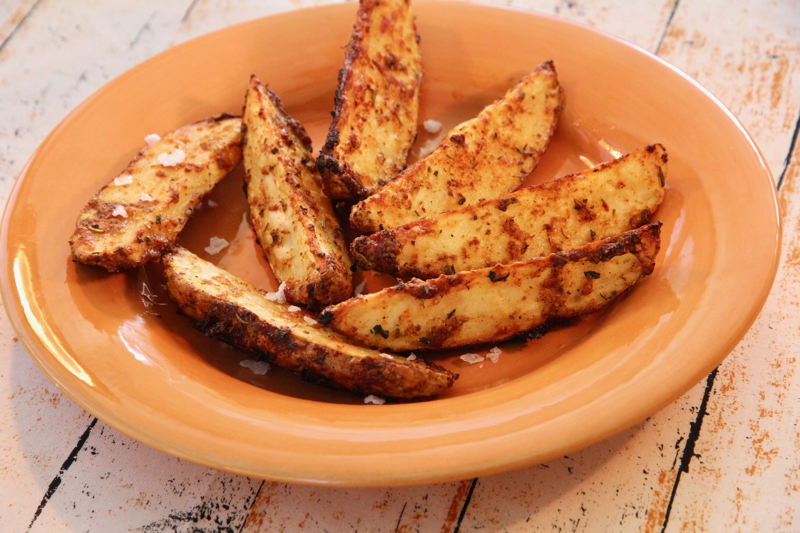

Garlic Parmesan Potato Wedges

Description
A recipe for boiled chicken; boiled chicken meat is called for in many other
recipes, and is a wonderful basic recipe to have for many uses.
Ingredients
- 3 large russet potatoes, scrubbed and cut into wedges
- 4 tablespoons olive oil
- ½ cup grated Parmesan cheese
- 2 teaspoons Italian seasoning
- 2 teaspoons garlic powder
- 1 teaspoon paprika
- salt to taste
Directions
- Preheat the oven to 400 degrees F (200 degrees C).
-
Place potato wedges in a large bowl. Drizzle with olive oil and toss to
coat. Sprinkle potato wedges with Parmesan cheese and toss again.
-
Mix Italian seasoning, garlic powder, paprika, and salt together in a small
bowl. Sprinkle over the wedges and toss to coat. Arrange wedges skin-side
down on a rimmed baking sheet.
-
Bake in the preheated oven until fork-tender and golden, about 40 minutes.